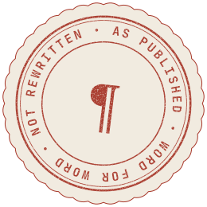
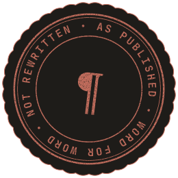

The pointer is used across the web app. Hovering anything that opens a story turns it into the Read more stamp, centred on the mouse. Other buttons and links keep the normal hand. Touch screens and small screens never see these.